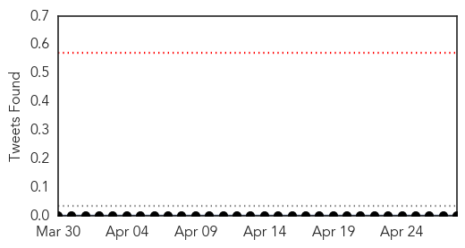
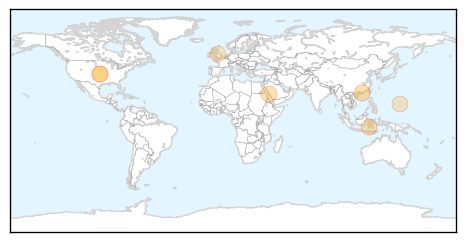
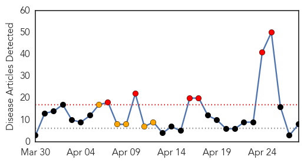
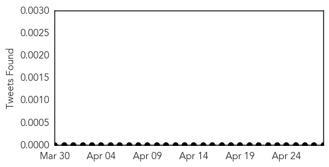
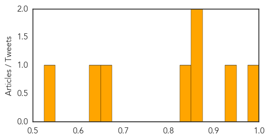

Dengue Fever
30-Day Web Trend
5 alerts, 2 warnings

30-Day Twitter Trend
0 alerts, 0 warnings

Article Locations
Article Confidences

Top Articles:
- 0.986
- Trial of Dengue Fever Vaccine Cuts Infection in Half
- 0.960
- First vaccine for dengue shows promise in trials
- 0.897
- Insurance firms clueless amid rising MERS cases
- 0.814
- Sanofi dengue vaccine proves effective
- 0.689
- Asia Pacific Region: Weekly Regional Humanitarian Snapshot 22 - 28 April 2014 - Bangladesh
- 0.647
- With genome deciphered, experts aim to swat dreaded tsetse fly
- 0.633
- Sanofi successfully completes dengue vaccine study
Top Tweets:
-
No tweets found for Apr 28, 2014
Measles
30-Day Web Trend
6 alerts, 5 warnings

30-Day Twitter Trend
0 alerts, 0 warnings

Article Locations

Article Confidences
Top Articles:
- 0.977
- Measles cases in U.S. worst in 20 years
- 0.948
- Measles is on the Upswing Because People Are Skipping the Vaccine, CDC Says
- 0.870
- State of Confusion: One-Third of American Parents Continue to Link Vaccines and Autism
- 0.856
- Vietnam to give free measles vaccination to children aged 2-10
- 0.841
- Childhood Diseases Making a Comeback: Health Department
- 0.673
- Experts worry about Measles outbreak spreading to Utah
- 0.630
- Millions of lives saved with immunizations every year
- 0.533
- The Invisible Threat of Vaccine Refusal
Top Tweets:
-
No tweets found for Apr 28, 2014